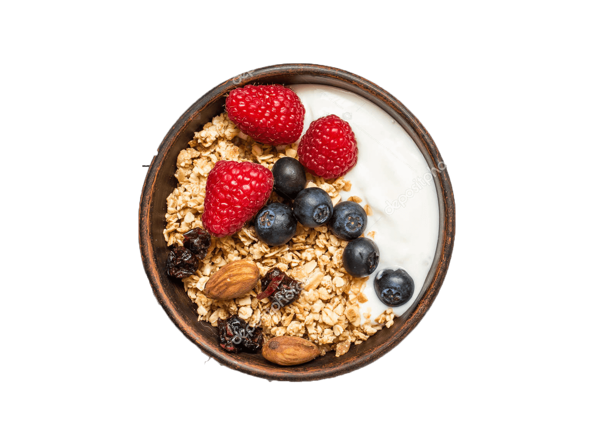
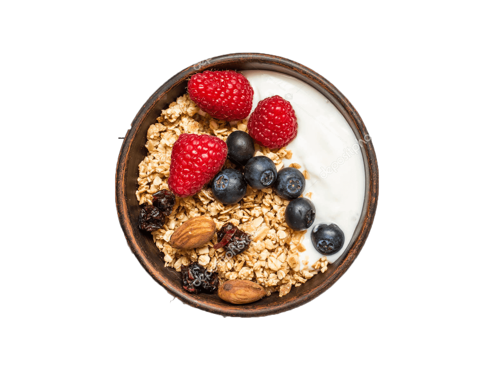

The brief
This project was part of a UX design class at Scuola Politecnica di Design (Milan).
Redesign TheFork by doing research, finding people’s needs and their issues with the service Add new features, or redesign new ones.
The challenge
We found TheFork a bit old-fashioned and found that some of the basic tasks users had to perform were quite complicated.
The Fork, being an app mainly for promotions and booking didn’t seem to have a design adapted to those qualities.
 
